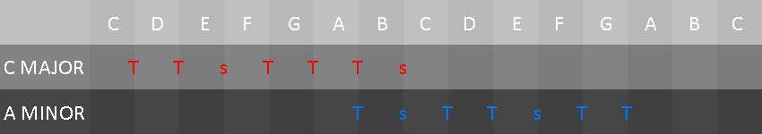
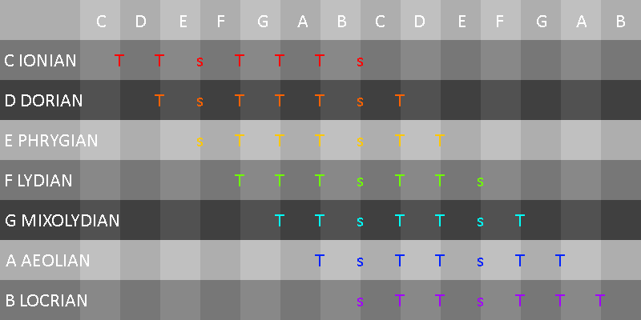

GROWL
I'd rather be playing guitar
 EN
EN
I am going to make this as painless as possible. I had a lot of trouble with the concept of modes early on. It took me so long to get the idea that I am embarrassed to even say how long! That being said, I think modality is one of the most powerful and useful concepts in music, especially for guitarists. I'm going to start with definitions (of my own) and then get in with an analogy!
KEY-defn:
A musical key is a definition of the tones used as basis for a piece or extract of music. Therefore, if a piece is "in C major", we are saying it uses the notes C,D,E,F,G,A,B as its chief structure. Exceptions (it wouldn't be music without them): A composer may occasionally use notes from outside of key, for character, expression or voice leading.
SCALE-defn:
A scale is a formula that dictates the arrangements of tones in a key, starting from its root. I like to call this an "interval pattern". Here are the most common scale formulae and the scales they produce!
MODE-defn: A mode is an altered form of the chief scales of Western music (major and minor). A mode is formed by displacing the root in an existing scale to form a new scale with a new interval pattern.
KEY BISCUITS - an analogy
Western music in general uses the 12 semitones that you know and love. That's C to C on a piano keyboard including everything in between. For a moment ignore that we are starting from C and just think of it as a biscuit dough of 12 notes. The truth is, that is how your ear actually hears it. This cookie dough can become many things: a hard biscuit, soft oven cookies, shortbread. Mmmm shortbread. All you need to do is add different amounts of water, sugar, flour, eggs, etc but the basic dough is always the same thing, the 12 semitones.
Say we're hungry and we want to make a biscuit song. First we need to know what kind of biscuit we want. Let's say we want sweet and simple shortbread; that's a major key. Uplifting, nostalgic and maybe a tad simple. The recipe for shortbread is always the same, a major scale. This is an interval pattern we know and can apply (T-T-s-T-T-T-s). The next thing we need to chose it the root note for the scale. This is an interesting question and one that I could take ten articles to discuss, a lot of it very advanced theory. For now though let's say you pick a root note of G because you find it easy to sing in G (I know I do).
A quick aside:I highly recommend playing a major from each root note on your low E string (or whatever instrument you use) and singing the notes as you play them. Whichever scale is your Goldilocks scale (not too low, not too high); that's the key area you probably want to use the most for songwriting. So if G is your thing: G major, G minor are your best starting points.
So we have our starting note G and a major scale pattern. We can now apply our major recipe from G and we have all the notes in G major.
Of course, the completed dough isn't the end. We need to cut out the biscuits. Well, we do that of course, selecting different cookie cutters... which are CHORDS! A chord has a specific formula and a specific shape: gingerbread man, finger, basic round. That part of music theory appears in my article on chord construction which you can find here.
MODES - MODIFIED DOUGH
If you are still with me then well done. Things here get vaguer but also more interesting. If you grew up in the UK, USA, most of Europe then you will probably be VERY familiar with the major and minor scale. But they are not the complete picture; not the only recipes for biscuits. The best way to get started is to demonstrate the links between the major and minor scales.
Hang on! So A minor IS C major? In a sense yes. If we just play a constant stream on notes with no start and end then we are playing both scales simultaneously. It doesn't end there. If you consider that playing a major scale from its 6th note (A) gives us a minor scale, what happens if we play from the other 5 notes? Modes, that's what. Dig the groovy ancient world names; the Ionian is the major and the Aeolian is the minor.
So here's what tripped me up many moons ago: Modes are traditionally taught by saying "take C major and play it from the D note to the D note, this gives you a Dorian scale." Maybe I am just stupid but I assumed that this produces a C Dorian scale. It doesn't of course, the scale root (D to D) is D, therefore we have a D scale with the note D sounding as the root. OK, so far so good. But there is now a question screaming in your head! "WHY ISN'T THIS JUST A C MAJOR SCALE!?".
CONTEXT IS EVERYTHING
TONAL CENTER-defn: The tonal center of a piece of music is the natural feeling of home, of rest that the music pulls toward. Most music in the classical tradition and most pop music starts at home and then eventually returns there. Home is the root of a musical scale.
Here then lies the explanation of why A minor isn't C major. If we feel like we need to go back to A, it doesn't matter that we are playing notes that exist too in C major. It's A we want. The A chord is home. This is where I'll end the article because we are getting to new concepts. Let's just spell them out with some statements.
- Major and minor scales dominate modern music because they more easily allow setting up a sense of home.
- The sense of home (tonal center) is developed in a piece of music by both the scale AND the sequence of chords used (harmony).
- Music contains punctuation. Patterns, melody, verses and thoughts all come to an end. We use tonal center to make this punctuation in the form of cadence.